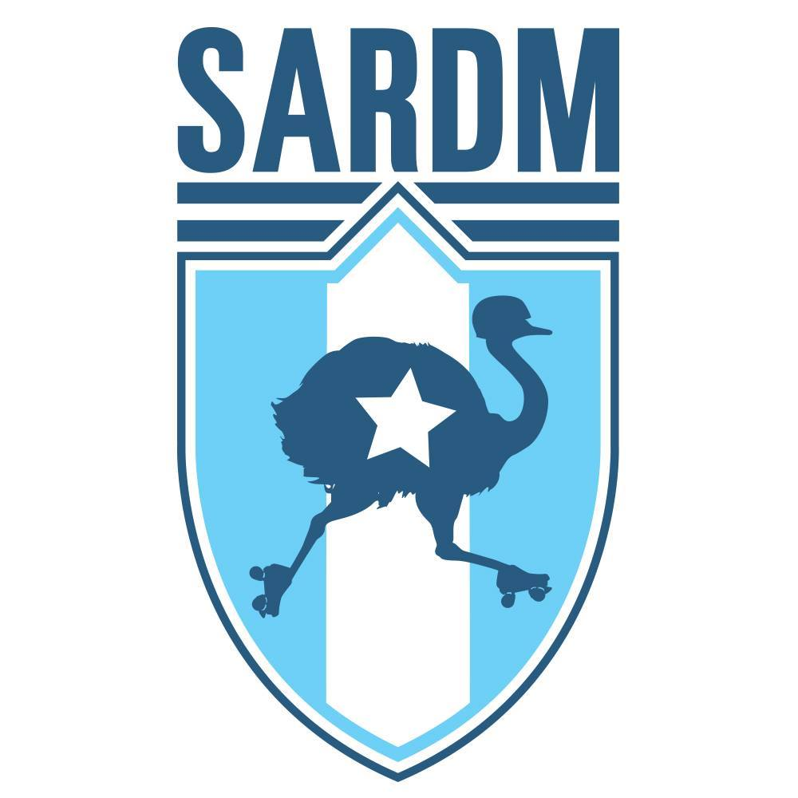

MRDWC 2016 Team Review: Seleccion Argentina de Roller Derby Masculino
Now heading into the last few teams for our Men's Roller Derby World Cup profiles, we're in Latin America. Despite the popularity of co-ed roller derby in Latin America, only Argentina sent a team to the last Men's Roller Derby World Cup... and they're back this time, as Seleccion Argentina de Roller Derby Masculino.
Last time around, despite a very short roster, Argentina performed admirably, taking a 7th place draw with Power of Scotland in the final rankings. They handily defeated both Netherlands and Sweden, and only narrowly lost to Australia's Wizards of Aus in a close final bout. Only England and France defeated them, albeit by the same impressive margins they managed over most contenders.

This time, Argentina have a larger roster, more experience, and less jet-lag to contend with. In Group Orange, they're a serious contender for the second "promotion spot" for a chance at the top placements - facing England and Sweden from last time, and new teams Italy and Chile.
We talked to Argentina to learn about their journey.
Seleccion Argentina were the only Latin American team competing in the 2014 MRDWC. How does feel to be returning with so many other Latin teams this time around? [Since this interview started, Colombia dropped out of the WC, sadly]
It feels just amazing. Not only because we get to reach a new goal with our new & full team, but also to see how much male derby has grown in Latin America! This time, your group places you against the mighty England, as well as Chile, Italy, Sweden. Last time around, you ranked much higher than Sweden, and most of the other teams are unknown. What are your aims for the group?
We are expecting great difficult games with each team of our group. We know each other very well with our brothers from Chile, and we’re also aware how much they've grown this time to now, and the same for Sweden. We don`t know Italy, that's going to be a surprise of a game...
What teams are you most looking forward to playing (or seeing) at MRDWC this year?
Sure, we are really excited to play against England, such a great and experienced team, it's gonna be a great experience for us. But what we're really looking forward is to see all teams, and every game. We don’t have many chances to play in Argentina, since there are no many leagues yet, and this is the chance to see lot of games, great teams, learn from it, and get to know skaters from all over the world. So the whole tournament is THE experience we´re looking forward to live, and see. I know that both Women's and Men's (and Coed) roller derby is very popular in Latin America. Can you tell us how your recruitment worked for the team?
Well, most of the guys who get in to Roller Derby is because a girl who plays in a team brings him to see, and gets him in touch with the nearest male team. And so it was when the National team was founded. Always supported by our friends, women from Women's Team ARG, who encouraged us to aim higher in the begining.
Are you mostly from Argentine teams?
Mostly :P
Team Argentina has players from ThunderQuads RDM (Bs.As. city), Black Panthers RD (La Plata city, Bs.As.), Contragolpe RDM (Mendoza), Rayo Naranja RD (Tucuman), different Provinces of our country. AND one player from the Philadelphia Hooligans, Penn Jersey Roller Derby.
This year, MRDWC are promoting the lead up to the Cup with the "Road to Calgary" tag. In the spirit of this, what bouts and training have you been doing since the last selection?
Well, our "Road to Calgary" was full of hard work. Since last selection, we got to work in new try-outs as soon as possible. After that, we set a training schedule. Since most of the players were surrounding Buenos Aires area, we set 2 training day per week, despite the gym work needed. We get to play a few demos to test the improvements, a simple game White vs. Blue. It wasn't 'till our last "goodbye demo", 2 weeks ago, that we got to play against others who aren't of the team, a coed game with the bravest guys and women from the local teams.
Are you getting a lot of media support (and fans) for Seleccion Argentina in Argentina? How many fans can we expect in the stadium?
Well, if you take into account that derby is a really new sport around here, which isnt popular at all (think that all media attention is always put on soccer), we could say we've had a lot of support. Weve worked a lot on public representation, and a few reporters got in touch, and invited us to radio inverviews, or local newspapers notes. That really moved our followers, that the other side, a lot of people, from friends, family, players from all over the country, showed us their support, on crowfunding campaigns, or or getting us in touch with media representatives, potential sponsors, or people they though might help us. Our biggest treasure is the people whom helped us to get here, and that love is the passion we're bringin to the MRDWC. It's a long and expensive ride from Argentina to Canada, even for us, the economy isnt pretty well. But theres a few friends, crazy friends, traveling with us, so you'll see the light-blue and white among the crowd :)
Argentina's first bout is against Chile on Track 2, 6pm UK time (11am Calgary)
The Seleccion Argentina Roster is:
08 Pibe 087 Leandro, Oscares 10 Sebastian, Castillo 12 Mauro, Cruz 1618 Mingo 17 Mr. Borderline 1753 Triske 1826 Itu Napolitanga 2 Facundo Bentos 21 Heavy Dolche 22 Pablo, Esquivel 235 Luke 28 Jose Augusto, Sanchez 3 Victor, Diaz 314 The Crow 4 Nicolas, Bergallo 44 Hector, Porro 666 Luis, Llorente 7 Black Shadow 930 Rafael, Guevara 99 Gregorio, Donnet
Bench Maisa, Barbosa Coach Daiana, Sismael Jammer Assist. Jillian, Vidal Stuff Assist. Ana, Sylvia Anabel Chasampi Staff Elena T.F. Staff INI Staff Turbonegra